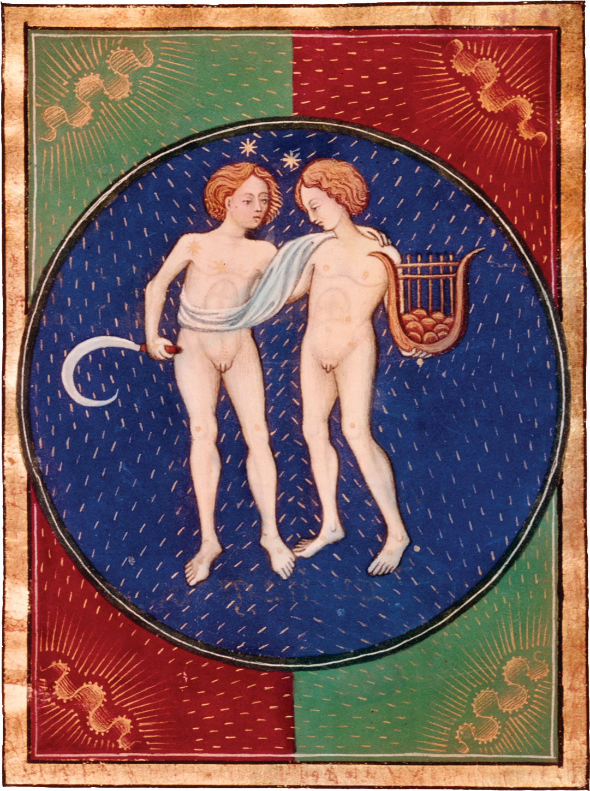

|

|
Gemini, (Latin: “Twins”) in astronomy, zodiacal
constellation lying in the northern sky between
Cancer and Taurus, at about 7 hours right ascension
and 22° north declination. Its brightest stars are Castor
and Pollux (Alpha and Beta Geminorum); Pollux is the
brighter of the two, with a magnitude of 1.15, and is the
17th brightest star in the sky. The summer solstice, the
orthernmost point reached by the Sun in its annual
apparent journey among the stars, lies in Gemini. This
constellation also contains the isolated pulsar Geminga.
In astrology, Gemini is the third sign of the zodiac, considered
as governing the period from about May 21 to about June 21. It is
represented by a set of twins (or in Egyptian astrology by a pair of
goats and in Arabian astrology by a pair of peacocks). In addition to
their identification as Castor and Pollux, the twins have also been
related to other celebrated pairs, such as the younger and older
Horus or Romulus and Remus.
|